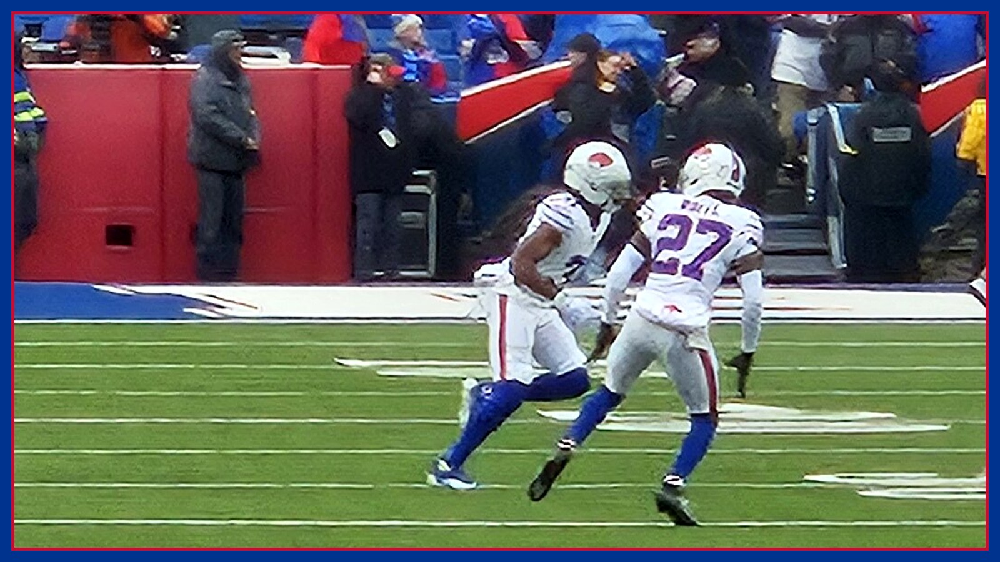

Benford and Williams are out, Kincaid is doubtful. Buffalo's final Dolphins report is official.
Head coach Joe Brady announced Friday that Christian Benford and Dorian Williams are out for Sunday vs Miami and Dalton Kincaid is doubtful, per Pro Football Talk and the final injury report. Dee Alford cleared concussion protocol and will play — and Brady's replacement plan is already set.

The reports are over. The rulings are in. Head coach Joe Brady announced on Friday that cornerback Christian Benford and linebacker Dorian Williams have been ruled out for Sunday's game against the Miami Dolphins, per Pro Football Talk, and tight end Dalton Kincaid is listed as doubtful with thumb and ankle injuries after not practicing all week, per the Bills' final injury report via Yardbarker. When the Miami Dolphins (1-8) visit the Buffalo Bills (8-1) on Sunday, Nov. 22 at 1 PM ET at Highmark Stadium, Buffalo will play a division game without its top cornerback, without a starting linebacker, and in all likelihood without its leading receiver. The good news arrived on the same report: nickel cornerback Dee Alford practiced fully on Friday, carries no injury designation, and cleared the concussion protocol, per Miami Dolphins on SI. Friday did not just shrink Buffalo's roster. It redrew Sunday's defense.
Benford's absence is the headline, and the timeline is the concern. He sustained the groin injury in the fourth quarter of Sunday's 31-12 win at the Jets, did not practice at all this week, and finishes the week ruled out, per Pro Football Talk. His season line is the size of the hole: 33 tackles and eight passes defensed in eight starts, per Pro Football Talk. There is a ceiling on the worry, at least. Brady said neither Benford's nor Williams' injury is seen as long term, per Heavy's reporting of Bills reporter Chris Brown, and the hope is that Benford will be available on Thanksgiving night against the Kansas City Chiefs, per the same reporting. That is a hope, not a designation — but it frames Sunday correctly. This is a one-week problem Buffalo has to solve, not a season problem it has to survive.
Brady already told us the first part of the solution. The head coach said Alford can slide outside from the nickel to replace Benford, with Jordan Hancock moving into the slot, per Yardbarker. Alford earned that trust the hard way this week: evaluated for a concussion twice against the Jets, cleared once, ruled out, then through the protocol and a full participant by Friday with no designation, per Miami Dolphins on SI. Behind that plan, Maxwell Hairston will presumably start opposite rookie Davison Igbinosun, per Sports Illustrated — and here is the roster math that makes Saturday worth watching: Buffalo has no other true outside cornerback on the 53-man roster behind those starters, per Sports Illustrated, so for numbers alone the Bills likely need a game-day addition. The most practical move is a practice-squad elevation of Tre'Davious White or undrafted rookie Kani Walker, per the same reporting, with any elevation due by Saturday's deadline. Brady is not tipping it: "If we have to have any practice squad call-ups, we feel comfortable with the guys on there," he said after Friday's practice, per Sports Illustrated. This desk wrote Wednesday that Buffalo brought White back on Oct. 19 for exactly this week. Friday made the week official. Saturday tells us if the call comes.
Williams is the quieter loss, and the numbers say it should not be. He appeared in all nine games this season with 61 tackles, two interceptions, a sack and a fumble recovery, per Pro Football Talk — and his last full game was his loudest, a team-high nine tackles with two quarterback hits and his first career sack against the Jets before the calf injury ended his afternoon, per the Democrat and Chronicle's reporting earlier this week. Rookie Kaleb Elarms-Orr will get most of the work at linebacker with Williams out, per Yardbarker. Elarms-Orr already owns a piece of this defense's streak — he recovered the fumble on the Jets' backfired hook-and-lateral last Sunday — and now a defense that has gone 33 consecutive drives without allowing a touchdown hands a rookie a starting share of the middle against a Dolphins offense with nothing left to lose.
On offense, doubtful is the word doing the damage. Kincaid leads the Bills with 487 receiving yards, and his 32 catches rank second on the team, per Yardbarker — and a doubtful tag after a full week of missed practice almost always means watching in street clothes. Dawson Knox, who has 14 receptions, would be the top option, per the same reporting, but the depth behind him is the real squeeze: Jackson Hawes is questionable after being limited all week with a shoulder injury, and Hawes and Keleki Latu have three catches between them, per Yardbarker. That matters beyond the passing game, because Buffalo uses a three-tight-end package on 29 percent of its offensive plays, the second-highest rate in the league, per the same reporting. Lose Kincaid, sweat Hawes, and an entire personnel family shrinks. The counterweight is the one this site's Film Room wrote about yesterday: James Cook, who needs 75 rushing yards and a touchdown to stand alone in second place in NFL history with nine straight games hitting both marks. A thinner tight end room is one more reason Sunday's plan runs through No. 4.
The rest of Friday's list is shorter, and Miami's is its own kind of mess. Buffalo also listed safety Damar Hamlin (toe) and defensive lineman T.J. Sanders (shoulder) as questionable, per the final report via Yardbarker. Miami ruled out punter Bradley Pinion and wide receiver Jared Wayne, listed starting safety Dante Trader Jr. and cornerback Jaylin Simpson as doubtful, and listed center Aaron Brewer, cornerback Darrell Baker Jr. and cornerback Marcellas Dial Jr. as questionable, per the Dolphins' official report. Brewer took the final step out of the concussion protocol with a full practice Friday and is trending toward playing, per Miami Dolphins on SI, while Miami's Saturday moves are expected to sort out a new punter in Jack Browning and a new kicker in Daniel Carlson, per the same reporting — a 1-8 team changing both specialists and starting a quarterback in his second career start, walking into the loudest building in the division.
So Sunday's checklist is set, and only one document can still change it: the inactives, about 90 minutes before the 1 PM ET kickoff, which will give the final word on Kincaid, Hamlin, Sanders and Hawes. Everything else is decided. Buffalo is 8-1, chasing a 9-1 start and a sixth straight win, with Kansas City arriving four days later on Thanksgiving night — which is exactly why Friday's rulings, frustrating as they are, may be the right kind of conservative. Benford and Williams get the extra days. The rookies get a 1-8 opponent at home instead of Patrick Mahomes on a short week. And a defense that has not allowed a touchdown in 33 drives gets one more test of the only thing that has defined it all month: the next man up actually being ready. Go Bills — and get every inactives update and Dolphins fallout in your inbox with The BNC Blitz.